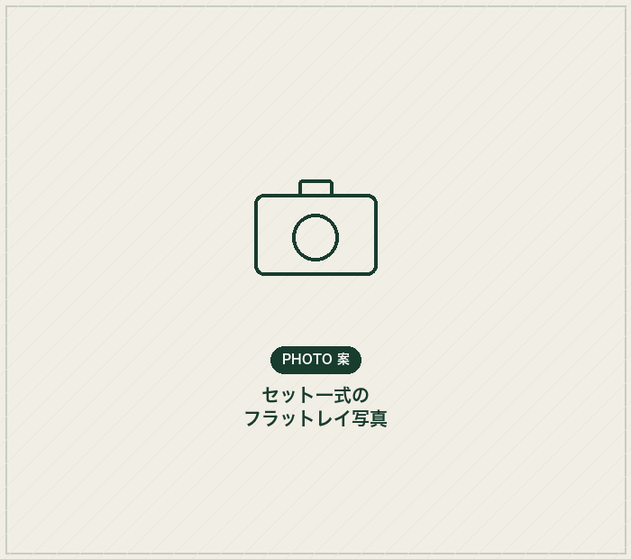
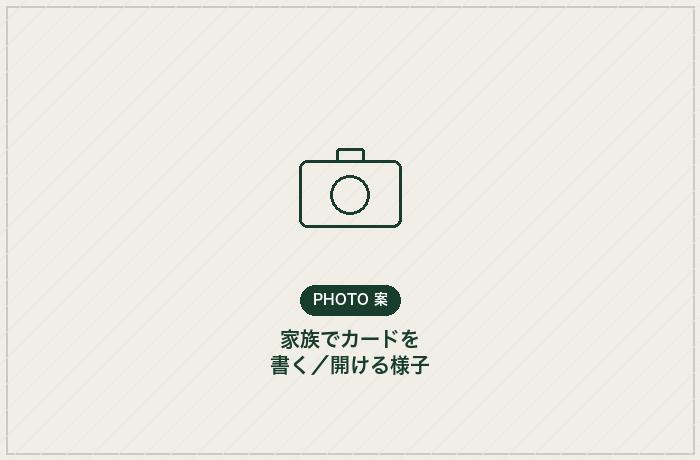
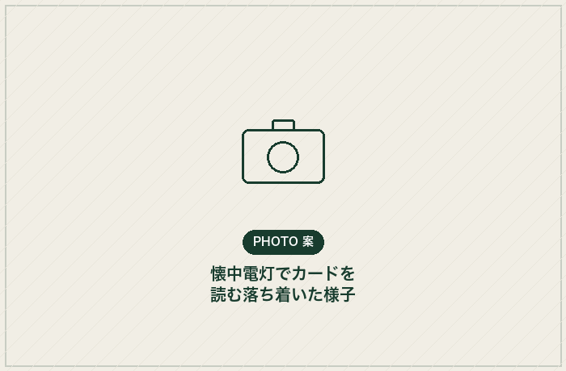

<!doctype html>
<html lang="ja">
  <head>
    <meta charset="UTF-8" />
    <meta name="viewport" content="width=device-width, initial-scale=1.0" />
    <meta name="description" content="備蓄食品をクリスマスのごちそうとして楽しみ、新しい備蓄へ入れ替える、年に一度の安心更新サービス。" />
    <link rel="icon" href="./assets/logo-mark.png" />
    <title>Merry Stock｜クリスマスに備蓄をおいしく入れ替える</title>
    <script type="module" crossorigin src="./assets/index-DTNutL_Z.js?v=20260803-21"></script>
    <link rel="stylesheet" crossorigin href="./assets/index-1Hqf6_9i.css">
  <link rel="stylesheet" crossorigin href="./assets/arrow-fix.css?v=20260803-31">
</head>
  <body><div id="root"></div>
    <!-- EXPERIMENTAL (2026-08-04): can image bottom-aligned with the hero
         actions row. Delete this <script>/<style> block to fully revert. -->
    <style>
      .hero-can-align{display:flex;align-items:flex-end;gap:18px}
      .hero-copy-stack{flex:1 1 auto;min-width:0}
      .hero-title-can{width:min(150px,18vw);height:auto;flex:0 0 auto}
      @media(max-width:900px){
        .hero-can-align{gap:14px}
        .hero-title-can{width:min(120px,26vw)}
      }
    </style>
    <script>
      (function () {
        function addHeroCan() {
          var h1 = document.querySelector(".hero-main h1");
          var actions = document.querySelector(".hero-main .hero-actions");
          if (!h1 || !actions) return false;
          if (h1.dataset.canInjected) return true;
          var heroMain = h1.parentNode;
          var alignWrap = document.createElement("div");
          alignWrap.className = "hero-can-align";
          var copyStack = document.createElement("div");
          copyStack.className = "hero-copy-stack";
          heroMain.insertBefore(alignWrap, h1);
          copyStack.appendChild(h1);
          copyStack.appendChild(actions);
          alignWrap.appendChild(copyStack);
          var img = document.createElement("img");
          img.className = "hero-title-can";
          img.src = "./assets/can-egg-free-danish.png?v=20260807b";
          img.width = 1038;
          img.height = 898;
          img.alt = "";
          img.setAttribute("aria-hidden", "true");
          alignWrap.appendChild(img);
          h1.dataset.canInjected = "1";
          return true;
        }
        var tries = 0;
        var timer = setInterval(function () {
          tries++;
          if (addHeroCan() || tries > 100) clearInterval(timer);
        }, 50);
      })();
    </script>

    <!-- EXPERIMENTAL (2026-08-04): single seamless looping ticker arrow.
         Delete this <style>/<script> block to fully revert. -->
    <style>
      .hero-flow-arrow{display:none!important}
      .hero-flow-track{
        position:absolute!important;
        inset:0!important;
        display:flex!important;
        width:200%!important;
        height:100%!important;
        animation:hero-arrow-stream2 6s linear infinite!important;
      }
      .hero-flow-arrow2{
        position:relative!important;
        flex:0 0 50%!important;
        width:50%!important;
        height:100%!important;
      }
      .hero-flow-arrow2:before{
        content:""!important;
        position:absolute!important;
        left:0!important;
        top:32%!important;
        width:calc(100% - 139px)!important;
        height:56px!important;
        background:#fff!important;
        transform:translateY(-50%)!important;
      }
      .hero-flow-arrow2:after{
        content:""!important;
        position:absolute!important;
        left:calc(100% - 139px)!important;
        top:32%!important;
        width:0!important;
        height:0!important;
        border-top:58px solid transparent!important;
        border-bottom:58px solid transparent!important;
        border-left:93px solid #fff!important;
        transform:translateY(-50%)!important;
      }
      @media(max-width:900px){
        .hero-flow-arrow2:before{width:calc(100% - 106px)!important;height:43px!important}
        .hero-flow-arrow2:after{
          left:calc(100% - 106px)!important;
          border-top-width:45px!important;
          border-bottom-width:45px!important;
          border-left-width:71px!important;
        }
      }
      .hero-lead{display:none!important}
      @media(min-width:901px){
        .hero{
          min-height:calc(100vh - 280px)!important;
          padding-top:60px!important;
          padding-bottom:38px!important;
        }
        .hero-main{padding-top:58px!important;padding-bottom:24px!important}
        .hero-service-wordmark{width:clamp(340px,50vw,820px)!important;height:auto!important;margin:24px 0 22px!important}
        .hero h1{margin-bottom:12px!important}
        .hero-orbit{width:min(460px,34vw)!important;margin:26px auto 12px!important}
        .orbit-core p{display:none!important}
        .orbit-core strong{font-size:16px!important}
        .orbit-core span{font-size:12px!important}
      }
      @media(max-width:900px){
        .hero{min-height:calc(100vh - 92px)!important}
      }
      .header{border-bottom:none!important}
      @keyframes hero-arrow-stream2{
        from{transform:translateX(-50%)}
        to{transform:translateX(0)}
      }
      @media(prefers-reduced-motion:reduce){
        .hero-flow-track{animation:none!important}
      }
    </style>
    <script>
      (function () {
        function addFlowArrows() {
          var track = document.querySelector(".hero-flow-track");
          if (!track) return false;
          if (track.dataset.arrow2Injected) return true;
          for (var i = 0; i < 2; i++) {
            var a = document.createElement("div");
            a.className = "hero-flow-arrow2";
            track.appendChild(a);
          }
          track.dataset.arrow2Injected = "1";
          return true;
        }
        var tries = 0;
        var timer = setInterval(function () {
          tries++;
          if (addFlowArrows() || tries > 100) clearInterval(timer);
        }, 50);
      })();
    </script>

    <!-- EXPERIMENTAL (2026-08-05): single-line MERRY STOCK wordmark.
         Delete this <script> block to fully revert. -->
    <script>
      (function () {
        function swapWordmark() {
          var img = document.querySelector(".hero-service-wordmark");
          if (!img) return false;
          if (img.dataset.lineSwapped) return true;
          img.src = "./assets/merry-stock-wordmark-line.webp";
          img.width = 1129;
          img.height = 148;
          img.dataset.lineSwapped = "1";
          return true;
        }
        var tries = 0;
        var timer = setInterval(function () {
          tries++;
          if (swapWordmark() || tries > 100) clearInterval(timer);
        }, 50);
      })();
    </script>

    <!-- EXPERIMENTAL (2026-08-05): header/footer MERRY STOCK wordmark image.
         Delete this <style>/<script> block to fully revert. -->
    <style>
      .wordmark-text{height:36px;width:auto;display:block}
      @media(max-width:520px){
        .wordmark-text{height:32px}
      }
      .plans,.kit{background:#eaefc9!important}
      .plan-grid article{border-color:transparent!important;border-radius:16px!important}
      .menu-card{box-shadow:0 2px 14px rgba(21,44,36,.07)!important}
    </style>
    <script>
      (function () {
        function swapLockupText(span, altText) {
          if (!span || span.dataset.lockupSwapped) return false;
          var img = document.createElement("img");
          img.className = "wordmark-text";
          img.src = "./assets/merry-stock-wordmark-hd.png";
          img.width = 732;
          img.height = 412;
          img.alt = altText;
          if (!altText) img.setAttribute("aria-hidden", "true");
          span.parentNode.replaceChild(img, span);
          return true;
        }
        function swapLockups() {
          var spans = document.querySelectorAll(".wordmark span");
          if (!spans.length) return false;
          var done = true;
          spans.forEach(function (span, i) {
            var isFooter = span.closest(".footer-mark");
            var ok = swapLockupText(span, isFooter ? "MERRY STOCK" : "");
            if (!ok) done = false;
          });
          return done;
        }
        var tries = 0;
        var timer = setInterval(function () {
          tries++;
          if (swapLockups() || tries > 100) clearInterval(timer);
        }, 50);
      })();
    </script>

    <!-- EXPERIMENTAL (2026-08-05): remove the "WHY MERRY STOCK?" problem
         section and its dead nav link. Delete this <script> block to fully
         revert. -->
    <script>
      (function () {
        function removeProblemSection() {
          var section = document.querySelector("section.problem");
          var navLink = document.querySelector('.header nav a[href="#concept"]');
          if (!section) return false;
          section.remove();
          if (navLink) navLink.remove();
          return true;
        }
        var tries = 0;
        var timer = setInterval(function () {
          tries++;
          if (removeProblemSection() || tries > 100) clearInterval(timer);
        }, 50);
      })();
    </script>

    <!-- EXPERIMENTAL (2026-08-05): clean up the STEP 01 header (drop the
         redundant order-guide micro-copy and the "まず、" prefix).
         Delete this <style>/<script> block to fully revert. -->
    <style>
      .order-guide{display:none!important}
      .step-title{margin-bottom:56px!important}
      .step-title>p:last-child{font-size:15px!important;line-height:1.85!important;color:#5b675f!important}
      .plan-card-head p{display:none!important}
      .plan-grid article{padding:40px 32px 32px!important;min-height:0!important}
      .plan-can{margin-top:32px!important}
      .plan-grid h3{margin-top:28px!important}
      .plan-grid small{margin-bottom:32px!important}
      .plan-grid button{margin-top:0!important}
    </style>
    <script>
      (function () {
        function trimStepOneHeadline() {
          var h2 = document.querySelector(".plans .step-title h2");
          if (!h2) return false;
          if (h2.dataset.trimmed) return true;
          if (h2.firstChild && h2.firstChild.nodeType === 3) {
            h2.firstChild.textContent = h2.firstChild.textContent.replace(/^まず、/, "");
          }
          h2.dataset.trimmed = "1";
          return true;
        }
        var tries = 0;
        var timer = setInterval(function () {
          tries++;
          if (trimStepOneHeadline() || tries > 100) clearInterval(timer);
        }, 50);
      })();
    </script>

    <!-- EXPERIMENTAL (2026-08-05): STEP 01/02 headers — fold "STEP NN / Label"
         into one bold headline (big number + label) and drop the separate
         large heading below it. Delete this <style>/<script> block to fully
         revert. -->
    <style>
      .step-title h2{display:none!important}
      .step-title .section-tag{
        display:flex!important;
        align-items:baseline!important;
        justify-content:center!important;
        width:100%!important;
        gap:18px!important;
        margin:0 0 20px!important;
      }
      .step-title .section-tag .step-num{
        font:900 clamp(60px,6.8vw,100px)/.82 Arial,sans-serif!important;
        color:var(--green)!important;
        letter-spacing:-.03em!important;
      }
      .step-title .section-tag .step-label{
        font:700 clamp(28px,3.2vw,46px)/1.15 "Hiragino Kaku Gothic ProN","Yu Gothic",sans-serif!important;
        color:var(--ink)!important;
        letter-spacing:-.02em!important;
      }
      .step-title>p:last-child{margin-top:0!important}
      @media(min-width:901px) and (max-height:940px){
        .step-title .section-tag{gap:14px!important;margin-bottom:14px!important}
        .step-title .section-tag .step-num{font-size:clamp(44px,5.2vw,68px)!important}
        .step-title .section-tag .step-label{font-size:clamp(22px,2.6vw,32px)!important}
      }
      @media(max-width:900px){
        .step-title .section-tag{justify-content:flex-start!important;gap:12px!important}
        .step-title .section-tag .step-num{font-size:clamp(44px,14vw,64px)!important}
        .step-title .section-tag .step-label{font-size:clamp(22px,7vw,30px)!important}
      }
    </style>
    <script>
      (function () {
        function upgradeStepHeaders() {
          var tags = document.querySelectorAll(".step-title .section-tag");
          if (!tags.length) return false;
          var done = true;
          tags.forEach(function (tag) {
            if (tag.dataset.stepUpgraded) return;
            var m = tag.textContent.match(/STEP\s*(\d+)\s*\/\s*(.+)/);
            if (!m) { done = false; return; }
            tag.innerHTML =
              '<span class="step-num">' + m[1] + '</span>' +
              '<span class="step-label">' + m[2] + '</span>';
            tag.dataset.stepUpgraded = "1";
            var h2 = tag.parentElement.querySelector("h2");
            if (h2) h2.style.display = "none";
          });
          return done;
        }
        var tries = 0;
        var timer = setInterval(function () {
          tries++;
          if (upgradeStepHeaders() || tries > 100) clearInterval(timer);
        }, 50);
      })();
    </script>

    <!-- EXPERIMENTAL (2026-08-05): "future" section — illustration on the
         right (larger), copy on the left, drop the OUR FUTURE tag and the
         supporting paragraph. Delete this <style>/<script> block to fully
         revert. -->
    <style>
      .future{
        display:flex!important;
        align-items:center!important;
        justify-content:space-between!important;
        gap:4vw!important;
        text-align:left!important;
        padding:110px 6vw!important;
      }
      .future-copy{display:flex!important;flex-direction:column!important;align-items:flex-start!important;flex:0 1 660px!important}
      .future blockquote{font-size:clamp(36px,3.9vw,56px)!important;line-height:1.22!important;margin:0 0 40px!important;white-space:nowrap!important}
      .future-illustration{width:min(560px,42vw)!important;height:auto!important;flex:0 0 auto!important}
      @media(max-width:900px){
        .future{flex-direction:column!important;text-align:center!important;padding:90px 24px!important;gap:36px!important}
        .future-copy{align-items:center!important;flex:0 1 auto!important}
        .future blockquote{font-size:clamp(32px,8vw,46px)!important}
        .future-illustration{width:min(360px,70vw)!important;order:-1!important}
      }
    </style>
    <script>
      (function () {
        function relayoutFuture() {
          var future = document.querySelector(".future");
          if (!future) return false;
          if (future.dataset.futureRelaid) return true;

          var blockquote = future.querySelector("blockquote");
          var button = future.querySelector("button");
          if (!blockquote || !button) return false;

          var tag = future.querySelector(".section-tag");
          if (tag) tag.remove();
          var desc = future.querySelector("p");
          if (desc) desc.remove();

          var copy = document.createElement("div");
          copy.className = "future-copy";
          future.insertBefore(copy, blockquote);
          copy.appendChild(blockquote);
          copy.appendChild(button);

          var img = document.createElement("img");
          img.className = "future-illustration";
          img.src = "./assets/future-illustration-green.png?v=20260807e";
          img.alt = "";
          img.setAttribute("aria-hidden", "true");
          future.appendChild(img);

          future.dataset.futureRelaid = "1";
          return true;
        }
        var tries = 0;
        var timer = setInterval(function () {
          tries++;
          if (relayoutFuture() || tries > 100) clearInterval(timer);
        }, 50);
      })();
    </script>

    <!-- EXPERIMENTAL (2026-08-05): footer matches the header/hero lime
         background; hero gets a taller lime area on the first screen.
         Delete this <style> block to fully revert. -->
    <style>
      footer{background:var(--lime)!important;border-top:0!important}
      @media(min-width:901px){
        .hero{min-height:calc(100vh - 120px)!important}
      }
    </style>

    <!-- EXPERIMENTAL (2026-08-05): remove the menu concept-image note; swap
         the plan cards' "01/02/03" badge + abstract circle for actual can
         icons (one per person). Delete this <style>/<script> block to fully
         revert. -->
    <style>
      .plan-cans{
        display:grid!important;
        justify-content:center!important;
        align-items:center!important;
        height:96px!important;
        margin:30px auto 20px!important;
        gap:8px!important;
      }
      .plan-cans-1{grid-template-columns:1fr!important}
      .plan-cans-2{grid-template-columns:repeat(2,1fr)!important}
      .plan-cans-4{grid-template-columns:repeat(2,1fr)!important}
      .can-icon{
        display:block!important;
        border-radius:50%!important;
        border:2px solid var(--green)!important;
        background:var(--paper)!important;
        position:relative!important;
        animation:can-bob 4.8s ease-in-out infinite!important;
      }
      .can-icon:before{
        content:""!important;
        position:absolute!important;
        inset:13%!important;
        border-radius:50%!important;
        border:2px solid rgba(21,44,36,.22)!important;
      }
      .plan-cans-1 .can-icon{width:96px!important;height:96px!important}
      .plan-cans-2 .can-icon{width:92px!important;height:92px!important}
      .plan-cans-4 .can-icon{width:44px!important;height:44px!important}
      .plan-cans .can-icon:nth-child(2){animation-delay:-1.2s!important}
      .plan-cans .can-icon:nth-child(3){animation-delay:-2.4s!important}
      .plan-cans .can-icon:nth-child(4){animation-delay:-3.6s!important}
      .future{background:var(--lime)!important;padding:62px 6vw!important}
      .future blockquote{color:var(--green)!important}
      .future .button{background:var(--green)!important;color:#fff!important}
      .annual-loop{display:none!important}
      .how{padding-bottom:70px!important}
      footer{min-height:0!important;padding:28px 5vw 36px!important}
    </style>
    <script>
      (function () {
        function removeMenuNote() {
          var note = document.querySelector(".menu-note");
          if (note) note.remove();
          return true;
        }
        function upgradePlanCards() {
          var cans = document.querySelectorAll(".plan-grid article .plan-can");
          if (!cans.length) return false;
          var done = true;
          cans.forEach(function (canEl) {
            var article = canEl.closest("article");
            if (article.dataset.canUpgraded) return;
            var b = canEl.querySelector("b");
            var count = b ? parseInt(b.textContent, 10) : NaN;
            if (!count) { done = false; return; }
            var wrap = document.createElement("div");
            wrap.className = "plan-cans plan-cans-" + count;
            wrap.setAttribute("aria-hidden", "true");
            for (var i = 0; i < count; i++) {
              var icon = document.createElement("span");
              icon.className = "can-icon";
              wrap.appendChild(icon);
            }
            canEl.parentNode.insertBefore(wrap, canEl);
            canEl.remove();
            var head = article.querySelector(".plan-card-head");
            if (head) head.remove();
            article.dataset.canUpgraded = "1";
          });
          return done;
        }
        var tries = 0;
        var timer = setInterval(function () {
          tries++;
          var a = removeMenuNote();
          var b = upgradePlanCards();
          if ((a && b) || tries > 100) clearInterval(timer);
        }, 50);
      })();
    </script>

    <!-- EXPERIMENTAL (2026-08-05): enlarge the primary CTA buttons (hero +
         future) and shorten the hero button label. Delete this <style>/<script>
         block to fully revert. -->
    <style>
      .button.primary{font-size:14px!important;padding:23px 30px!important}
      .hero-actions{gap:clamp(20px,3vw,40px)!important;flex-wrap:nowrap!important}
      .hero-actions .button.primary{
        font-size:clamp(13px,1.1vw,16px)!important;
        padding:clamp(18px,1.9vw,26px) clamp(22px,2.6vw,34px)!important;
        white-space:nowrap!important;
      }
      .hero-actions .text-link{
        font-size:clamp(13px,1.1vw,16px)!important;
        white-space:nowrap!important;
      }
      .hero-can-align{gap:clamp(14px,2.4vw,28px)!important}
      .hero-title-can{width:min(130px,15vw)!important}
      .future .button{
        font-size:clamp(13px,1.1vw,16px)!important;
        padding:clamp(18px,1.9vw,26px) clamp(22px,2.6vw,34px)!important;
        white-space:nowrap!important;
      }
      .brand-symbol{border-radius:10px!important}
    </style>
    <script>
      (function () {
        function shortenHeroButton() {
          var btn = document.querySelector(".hero-actions .button.primary");
          if (!btn) return false;
          if (btn.dataset.labelShortened) return true;
          var span = btn.querySelector("span");
          var arrow = span ? span.textContent : "→";
          btn.textContent = "備蓄を選ぶ ";
          var newSpan = document.createElement("span");
          newSpan.textContent = arrow;
          btn.appendChild(newSpan);
          btn.dataset.labelShortened = "1";
          return true;
        }
        var tries = 0;
        var timer = setInterval(function () {
          tries++;
          if (shortenHeroButton() || tries > 100) clearInterval(timer);
        }, 50);
      })();
    </script>

    <!-- EXPERIMENTAL (2026-08-05): new "message card" section between the
         cycle overview (how) and the closing CTA (future) — the emotional /
         keepsake value the client asked to add. Delete this <style>/<script>
         block to fully revert. -->
    <style>
      .keepsake{background:var(--paper)!important;padding:110px 6vw!important;order:6!important}
      .keepsake-intro{max-width:760px;margin:0 auto 60px;text-align:center}
      .keepsake-intro .section-tag{display:block;margin-bottom:16px}
      .keepsake-intro h2{font-size:clamp(38px,4.2vw,58px);line-height:1.15;letter-spacing:-.03em;margin:0 0 20px;font-weight:700;color:var(--ink)}
      .keepsake-intro>p{font-size:14px;line-height:1.9;color:#4c584f}
      .keepsake-grid{display:grid;grid-template-columns:repeat(2,1fr);gap:16px;max-width:1120px;margin:0 auto}
      .keepsake-grid article{border:1px solid var(--line);padding:36px 32px;background:var(--paper)}
      .keepsake-tag{display:inline-block;font:800 10px Arial;letter-spacing:.14em;color:var(--green);border:1px solid var(--green);border-radius:999px;padding:6px 14px;margin-bottom:18px}
      .keepsake-grid h3{font-size:22px;margin:0 0 12px;letter-spacing:-.02em;color:var(--ink)}
      .keepsake-grid p{font-size:13px;line-height:1.9;color:#4c584f;margin:0}
      @media(max-width:900px){
        .keepsake{padding:80px 24px}
        .keepsake-grid{grid-template-columns:1fr}
      }
    </style>
    <script>
      (function () {
        function addKeepsakeSection() {
          var how = document.querySelector("section.how");
          if (!how || !how.parentNode) return false;
          if (document.querySelector(".keepsake")) return true;

          var section = document.createElement("section");
          section.className = "keepsake";
          section.id = "keepsake";

          var intro = document.createElement("div");
          intro.className = "keepsake-intro";
          intro.innerHTML =
            '<p class="section-tag">MESSAGE CARD</p>' +
            "<h2>備蓄と一緒に、<br />家族の想いも備える。</h2>" +
            "<p>クリスマスに、家族や自分への感謝のメッセージや写真、緊急時の連絡先・避難場所などを一枚のカードに書き、次の備蓄品と一緒にしまっておきます。</p>";
          section.appendChild(intro);

          var grid = document.createElement("div");
          grid.className = "keepsake-grid";
          grid.innerHTML =
            "<article>" +
              '<span class="keepsake-tag">平時の場合</span>' +
              "<h3>毎年のクリスマスに</h3>" +
              "<p>翌年のクリスマスに開けたときは、一年間の無事に感謝しながら振り返る、家族の恒例行事に。</p>" +
            "</article>" +
            "<article>" +
              '<span class="keepsake-tag">有事の場合</span>' +
              "<h3>もしものときに</h3>" +
              "<p>災害時に開けたときは、家族の言葉と緊急連絡先が、落ち着いて行動するための支えに。</p>" +
            "</article>";
          section.appendChild(grid);

          how.parentNode.insertBefore(section, how.nextSibling);
          return true;
        }
        var tries = 0;
        var timer = setInterval(function () {
          tries++;
          if (addKeepsakeSection() || tries > 100) clearInterval(timer);
        }, 50);
      })();
    </script>

    <!-- EXPERIMENTAL (2026-08-06): unify the old "how" (cycle) and "keepsake"
         (message card) sections into a single "about" section placed right
         after the hero, before STEP 01 — so visitors understand what
         "備蓄" means and what the service does before being asked to pick a
         plan. The old how/keepsake sections are hidden (their content now
         lives here). Delete this <style>/<script> block to fully revert. -->
    <style>
      section.how{display:none!important}
      .keepsake{display:none!important}
      .about{background:var(--paper)!important;padding:100px 6vw 0!important;order:3!important}
      .about-steps-wrap{
        width:100vw;
        margin-left:calc(50% - 50vw);
        margin-right:calc(50% - 50vw);
        box-sizing:border-box;
        background:var(--cream);
        padding:100px 6vw;
      }
      @media(max-width:900px){
        .about-steps-wrap{padding:70px 24px}
      }
      .about-steps-wrap>.about-block#flow{border-top:none;padding-top:0}
      .plans{order:4!important}
      .kit{order:5!important}
      .about-intro{display:grid;grid-template-columns:1fr 1fr;gap:6vw;align-items:center;max-width:1160px;margin:0 auto 90px}
      .about-intro-copy{text-align:left}
      .about-intro .section-tag{display:block;margin-bottom:16px}
      .about-intro h2{font-size:clamp(28px,3.2vw,42px);line-height:1.35;letter-spacing:-.02em;margin:0 0 22px;font-weight:700;color:var(--ink)}
      .about-intro-copy>p{font-size:14px;line-height:1.9;color:#4c584f;margin:0 0 14px}
      .about-photo{width:100%;height:auto;display:block;border-radius:4px}
      .about-block{max-width:1120px;margin:0 auto 90px;padding-top:70px;border-top:1px solid var(--line)}
      .about-block:last-child{margin-bottom:0}
      .about-block>.section-tag{display:block;text-align:center;color:var(--green);margin-bottom:14px}
      .about-block>h3{font-size:clamp(26px,2.8vw,38px);line-height:1.3;letter-spacing:-.02em;margin:0 0 16px;color:var(--ink);text-align:center}
      .about-block>p{font-size:14px;line-height:1.9;color:#4c584f;text-align:center;max-width:600px;margin:0 auto 44px}
      .about-flow{display:grid;grid-template-columns:repeat(4,1fr);gap:20px}
      .about-flow-photo{position:relative;border-radius:4px;overflow:hidden;margin-bottom:18px}
      .about-flow-photo img{width:100%;height:auto;display:block}
      .about-flow-photo span{position:absolute;top:10px;left:10px;width:28px;height:28px;border-radius:50%;background:var(--green);color:#fff;font:700 11px Arial;display:grid;place-items:center}
      .about-flow h4{font-size:18px;margin:0 0 8px;color:var(--ink)}
      .about-flow p{font-size:12px;line-height:1.7;color:#4c584f}
      .about-grid{display:grid;grid-template-columns:repeat(2,1fr);gap:20px}
      .about-grid article{border:1px solid var(--line);background:var(--paper);overflow:hidden}
      .about-grid-photo{width:100%;height:auto;display:block}
      .about-grid article>.keepsake-tag{margin:28px 0 0 28px}
      .about-grid h4{font-size:20px;margin:12px 28px 10px}
      .about-grid p{font-size:13px;line-height:1.85;color:#4c584f;margin:0 28px 28px}
      .keepsake-tag{display:inline-block;font:800 10px Arial;letter-spacing:.14em;color:var(--green);border:1px solid var(--green);border-radius:999px;padding:6px 14px}
      @media(max-width:900px){
        .about{padding:70px 24px}
        .about-intro{grid-template-columns:1fr;gap:32px}
        .about-intro-copy{order:2}
        .about-photo{order:1}
        .about-flow{grid-template-columns:1fr 1fr;gap:28px}
        .about-grid{grid-template-columns:1fr}
      }
      .about-block>h3{font-size:clamp(28px,3.2vw,42px)!important;font-weight:700!important}
      .about-block>p{max-width:640px!important;text-wrap:pretty!important}
      .about-block:last-child>p{max-width:820px!important}
      .about-block>h3{
        font-size:clamp(32px,3.8vw,52px)!important;
        font-weight:800!important;
      }
      .about-intro h2{
        font-size:clamp(28px,3.6vw,46px)!important;
        font-weight:900!important;
        white-space:nowrap;
      }
      @media(max-width:900px){
        .about-intro h2{white-space:normal}
      }
      .about-intro{grid-template-columns:.95fr 1.25fr!important}
      @media(max-width:900px){
        .about-intro{grid-template-columns:1fr!important}
      }
      .menu-card{border-radius:16px!important}
      .button.primary,
      .plan-grid button,
      .future .button,
      .modal-submit,
      .complete button{
        border-radius:10px!important;
      }
      .about-flow-photo{border-radius:0!important}
      .hero-title-can{width:min(250px,14.5vw)!important}
      .hero h1{font-size:clamp(21px,2.3vw,36px)!important;margin-top:0!important}
      .hero-service-wordmark{margin:20px 0 22px!important}
      @media(min-width:901px){
        .hero-main{padding-top:36px!important}
      }
      .about{padding-top:160px!important}
      .about-intro{align-items:start!important;margin-bottom:160px!important}
      .about-intro h2{margin-bottom:24px!important}
      .about-photo{aspect-ratio:16/9!important;object-fit:cover!important;margin-top:0!important}
      .hero-title-can{width:min(220px,13vw)!important}
      .hero-can-align{align-items:flex-end!important}
      @media(max-width:900px){
        .hero-title-can{width:min(200px,34vw)!important}
      }
      .wordmark:before{border-radius:10px!important}
      .kit{padding-bottom:130px!important}
      .plan-grid article{min-height:460px!important}
      .menu-grid{grid-template-rows:460px!important}
      @media(max-width:900px){
        .menu-grid{grid-template-rows:repeat(3,460px)!important}
      }
    </style>
    <script>
      (function () {
        var flow = [
          ["ph-step1.png", "01", "備える", "人数に合った備蓄食品が、ひと箱にまとまって届きます。ここから、また一年の備えが始まります。"],
          ["ph-step2.png", "02", "知らせる", "クリスマスの約1か月前にお知らせ。届いていた備蓄から、つくりたいごちそうを選びます。"],
          ["ph-step3.png", "03", "作る", "リメイク食材とレシピが届き、パエリアやケーキなどのクリスマス料理をつくります。"],
          ["ph-step4.png", "04", "味わう", "できあがった料理を家族で味わい、食べた分だけ新しい備蓄が一緒に届きます。"]
        ];

        function fixNavLink() {
          var nav = document.querySelector(".header nav");
          if (!nav) return false;
          var oldLink = nav.querySelector('a[href="#how"]');
          if (oldLink) oldLink.setAttribute("href", "#flow");
          var aboutFlowLink = nav.querySelector('a[href="#about"]');
          if (aboutFlowLink && aboutFlowLink.textContent.indexOf("サービスの流れ") !== -1) {
            aboutFlowLink.setAttribute("href", "#flow");
          }
          if (nav.dataset.navReordered) return true;
          var aboutIntroLink = document.createElement("a");
          aboutIntroLink.setAttribute("href", "#about");
          aboutIntroLink.textContent = "MERRY STOCKとは？";
          nav.insertBefore(aboutIntroLink, nav.firstElementChild);
          nav.dataset.navReordered = "1";
          return true;
        }

        function addAboutSection() {
          var ticker = document.querySelector(".hero-ticker");
          if (!ticker || !ticker.parentNode) return false;
          if (document.querySelector(".about")) return true;

          var section = document.createElement("section");
          section.className = "about";
          section.id = "about";

          var intro = document.createElement("div");
          intro.className = "about-intro";
          intro.innerHTML =
            '<div class="about-intro-copy">' +
              "<h2>MERRY STOCKとは？</h2>" +
              "<p>災害に備えて非常食を用意しても、<br />賞味期限が近づいたまま、気づけば処分してしまう。<br />そんな経験はありませんか？</p>" +
              "<p>MERRY STOCKは、<br />賞味期限が近づいた非常食を、クリスマスにリメイクして味わい、<br />食べた分だけ、また新しく備え直す、年に一度の定期便サービスです。</p>" +
              "<p>もしもの日のための備えを、家族で味わう、年に一度の楽しみに。<br />そんな循環への想いから、MERRY STOCKが生まれました。</p>" +
            "</div>" +
            '';
          section.appendChild(intro);

          var stepsWrap = document.createElement("div");
          stepsWrap.className = "about-steps-wrap";
          section.appendChild(stepsWrap);

          var block1 = document.createElement("div");
          block1.className = "about-block";
          block1.id = "flow";
          var flowHtml = "";
          flow.forEach(function (f) {
            flowHtml +=
              "<article>" +
                '<div class="about-flow-photo">' +
                  '' +
                  "<span>" + f[1] + "</span>" +
                "</div>" +
                "<h4>" + f[2] + "</h4>" +
                "<p>" + f[3] + "</p>" +
              "</article>";
          });
          block1.innerHTML =
            "<h3>サービスの流れ</h3>" +
            "<p>注文を思い出さなくても、毎年決まった時期に食べる体験と次の備えをまとめてお届けします。</p>" +
            '<div class="about-flow">' + flowHtml + "</div>";
          stepsWrap.appendChild(block1);

          var block2 = document.createElement("div");
          block2.className = "about-block";
          block2.innerHTML =
            "<h3>備蓄と一緒に、<br />家族の想いも備える。</h3>" +
            "<p>クリスマスに、家族や自分への感謝のメッセージや写真、緊急時の連絡先・避難場所などを一枚のカードに書き、<br />次の備蓄品と一緒にしまっておきます。</p>" +
            '<div class="about-grid">' +
              "<article>" +
                '' +
                '<span class="keepsake-tag">平時の場合</span>' +
                "<h4>毎年のクリスマスに</h4>" +
                "<p>翌年のクリスマスに開けたときは、一年間の無事に感謝しながら振り返る、<br />家族の恒例行事に。</p>" +
              "</article>" +
              "<article>" +
                '' +
                '<span class="keepsake-tag">有事の場合</span>' +
                "<h4>もしものときに</h4>" +
                "<p>災害時に開けたときは、家族の言葉と緊急連絡先が、<br />落ち着いて行動するための支えに。</p>" +
              "</article>" +
            "</div>";
          stepsWrap.appendChild(block2);

          ticker.parentNode.insertBefore(section, ticker.nextSibling);
          return true;
        }

        var tries = 0;
        var timer = setInterval(function () {
          tries++;
          var a = addAboutSection();
          var b = fixNavLink();
          if ((a && b) || tries > 100) clearInterval(timer);
        }, 50);
      })();
    </script>

    <!-- EXPERIMENTAL (2026-08-06): remove the "CONCEPT PROTOTYPE" note under
         the plan cards and tighten the section's bottom padding.
         Delete this <style>/<script> block to fully revert. -->
    <style>
      .plans{padding-bottom:60px!important}
    </style>
    <script>
      (function () {
        function removePrototypeNote() {
          var note = document.querySelector(".prototype-note");
          if (note) note.remove();
          return true;
        }
        var tries = 0;
        var timer = setInterval(function () {
          tries++;
          if (removePrototypeNote() || tries > 100) clearInterval(timer);
        }, 50);
      })();
    </script>
  </body>
</html>
